토목기사 (2012-09-15 기출문제)
1과목: 응용역학
1. 총길이가 1.25m인 체인을 그림에서와 같이 크기가 25×25cm인 목재를 감싸서 운반하고 있다. 목재의 무게가 200kg일 때 체인에 작용하는 인장력은 얼마인가?
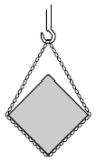
- 150kg
- 113.4kg
- 103.4kg
- 100kg
(정답률: 57%)

2. 다음 그림과 같은 구조물에서 지점 A에서의 수직반력의 크기는?
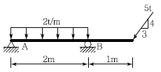
- 0t
- 1t
- 2t
- 3t
(정답률: 75%)
3. 그림과 같은 보에서 A점의 처짐각을 구하면? (단,EI＝2×105kg ∙ m2이다.)
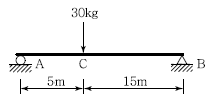
- 0.00328 rad
- 0.0⑤63 rad
- 0.00600 rad
- 0.01125 rad
(정답률: 50%)
4. 그림에서 지점 A, B의 반력 RA=RB가 되기위한 거리 x는?
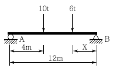
- 2.67m
- 2.87m
- 3.02m
- 3.22m
(정답률: 67%)
5. 다음과 같은 단면적이 A인 임의의 부재단면이 있다. 도심축으로부터 y1떨어진 축을 기준으로 한 단면2차모멘트의 크기가 Ix1일 때, 2y1떨어진 축을 기준으로 한 단면2차모멘트의 크기는?
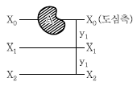
- Ix1+Ay12
- Ix1+2Ay12
- Ix1+3AY12
- Ix1+4Ay12
(정답률: 54%)
6. 무게 3,000kg인 물체를 단면적이 2cm2인 1개의 동선과 양쪽에 단면적이 1cm2인 철선으로 매달았다면 철선과 동선의 인장응력 бs, бc는 얼마인가? (단, 철선의 탄성계수 Es＝2.1×106kg/cm2, 동선의 탄성계수 Ec＝1.⑤×106kg/cm2이다.)
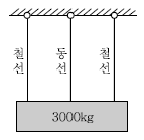
- бs=1,000kg/cm2, бc＝1,000kg/cm2
- бs=1,000kg/cm2, бc=500kg/cm2
- бs=500kg/cm2, бc=1,500kg/cm2
- бs=500kg/cm2, бc=500kg/cm2
(정답률: 68%)
7. 다음 그림과 같은 트러스에서 AC의 부재력은?
- 인장 10t
- 인장 15t
- 압축 5t
- 압축 10t
(정답률: 72%)
8. 그림과 같은 단순보의 최대전단응력 τmax 를 구하면? (단, 보의 단면은 지름이 D인 원이다.)
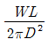
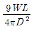
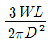
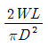
(정답률: 50%)
9. 그림과 같은 구조물에서 C점의 수직처짐을 구하면? (단, EI＝2×109kg ∙ m2이며 자중은 무시한다.)
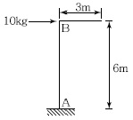
- 2.7mm
- 3.6mm
- 5.4mm
- 7.2mm
(정답률: 57%)
10. 그림과 같은 2경간 연속보에 등분포하중 w=400kg/m가 작용할 때 전단력이“0”이 되는 지점 A로부터의 위치(x)는?
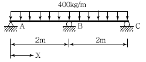
- 0.65m
- 0.75m
- 0.85m
- 0.95m
(정답률: 59%)
11. 단면이 10cm×20cm인 장주가 있다. 그 길이가 3m일 때 이 기둥의 좌굴하중은 약 얼마인가? (단, 기둥의 E＝2×105kg ∙ m2, 지지상태는 일단고정, 타단 자유이다.)
- 4.58t
- 9.14t
- 18.28t
- 36.56t
(정답률: 59%)
12. 그림과 같이 길이가 2L인 w의 등분포하중이 작용할 대 중앙지점을 δ만큼 낮추면 중간지점의 반력(RB) 값은 얼마인가?
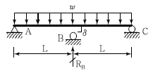
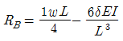
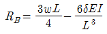
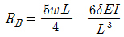
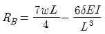
(정답률: 66%)
13. 아래 그림과 같은 정정 라멘에 분포하중 w가 작용할 때 최대 모멘트를 구하면?
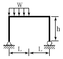
- 0.186wL2
- 0.219wL2
- 0.250wL2
- 0.281wL2
(정답률: 48%)
14. 길이 50mm, 지름 10mm의 강봉을 당겼더니 5mm 늘어났다면 지름의 줄어든 값은 얼마인가? (단, 푸아송비 v= 1/3이다.)
- 1/6mm
- 1/5mm
- 1/3mm
- 1/2mm
(정답률: 65%)
15. 아래 그림과 같은 보에서 C점의 모멘트를 구하면?
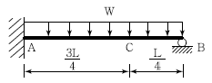
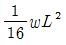
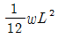
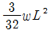
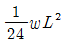
(정답률: 43%)
16. 그림과 같은 캔틸레버보에서 중앙점 C의 처짐은? (단, EI는 일정하다.)
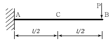
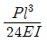
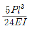
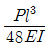
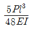
(정답률: 52%)
17. 다음 그림과 같은 단순보에 이동하중이 작용하는 경우 절대 최대 휨모멘트는 얼마인가?
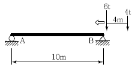
- 17.64t∙m
- 16.72t∙m
- 16.20t∙m
- 12.51t∙m
(정답률: 67%)
18. 다음과 같은 단면의 지름이 2d에서 d로 선형적으로 변하는 원형단면부재에 하중 P가 작용할 때, 전체 축방향 변위를 구하면? (단, 탄성계수 E는 일정하다.)
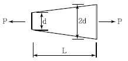
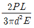
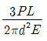
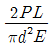
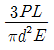
(정답률: 37%)
19. 그림과 같이 속이 빈 원형단면(빗금친 부분)의 도심에 대한 극관성 모멘트는?
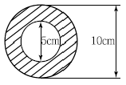
- 460cm4
- 760cm4
- 840cm4
- 920cm4
(정답률: 60%)
20. 그림과 같은 3활절아치의 내부힌지에서 수평으로 3m 떨어진 D점에서의 휨모멘트는?
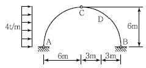
- 18t ∙ m
- －18t ∙ m
- 13.18t ∙ m
- －13.2t ∙ m
(정답률: 40%)
2과목: 측량학
21. 평면직교 좌표의 원점에서 동쪽에 있는 P1점에서 P2점 방향의 자북방위각을 관측한 결과 80°9ʹ20ʺ이었다. P1점에서 자오선 수차가 0°1ʹ40ʺ, 자침편차가 5°W일 때 진북방위각은?
- 75°7ʹ40ʺ
- 75°9ʹ20ʺ
- 85°7ʹ40ʺ
- 85°9ʹ20ʺ
(정답률: 37%)
22. 곡률이 급변하는 평면 곡선부에서의 탈선 및 심한 흔들림 등의 불안정한 주행을 막기 위해 고려하여야 하는 사항과 가장 거리가 먼 것은?
- 완화곡선
- 편경사
- 확폭
- 종단곡선
(정답률: 57%)
23. 트래버스측량에서 거리관측의 허용오차를 1/10,000로 할 때, 이와 같은 정확도로 각 관측에 허용되는 오차는?
- 5ʺ
- 10ʺ
- 20ʺ
- 30ʺ
(정답률: 58%)
24. 삼각망을 조정한 결과 다음과 같은 결과를 얻었다면 B점의 좌표는?
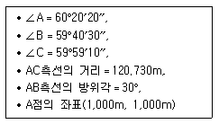
- (1104.886m, 1060.556m)
- (1060.556m, 1104.886m)
- (1104.225m, 1060.175m)
- (1060.175m, 1104.225m)
(정답률: 42%)
25. 양수표 설치장소 선정을 위한 고려사항에 대한 설명으로 옳지 않은 것은?
- 지천의 합류점으로 지천에 의한 수위 변화가 뚜렷한 곳
- 홍수시에도 양수표를 쉽게 읽을 수 있는 곳
- 세굴과 퇴적이 생기지 않는 곳
- 유속의 변화가 심하지 않은 곳
(정답률: 70%)
26. 측지학의 측지선에 관한 설명으로 옳지 않은 것은?
- 측지선은 두 개의 평면곡선의 교각을 2：1로 분할하는 성질이 있다.
- 지표면 상 2점을 잇는 최단거리가 되는 곡선을 측지선이라 한다.
- 평면곡선과 측지선의 길이의 차는 극히 미소하여 실무상 무시할 수 있다.
- 측지선은 미분기하학으로 구할 수 있으나 직접 관측하여 구하는 것이 더욱 정확하다.
(정답률: 40%)
27. 사진측량에 대한 설명으로 옳지 않은 것은?
- 사진측량에서는 기선이 없어도 정밀도가 높은 도화기로 도화작업을 행할 수 있는 장점이 있다.
- 촬영용 항공기는 항속거리가 길어야 하며, 이착륙 거리가 짧은 것이 좋다.
- 지면에 비고가 있으면 연직사진이라도 각 지점의 축척은 엄밀히 서로 다르다.
- 항공삼각측량이란 항공사진을 이용하여 내부표정, 상호표정, 절대표정을 거쳐 알고자 하는점의 절대좌료를 구하는 방법이다.
(정답률: 44%)
28. 지자기측량을 위한 관측요소가 아닌 것은?
- 지자기의 방향과 자오선과의 각
- 지자기의 방향과 수평면과의 각
- 자오선으로부터 좌표북 사이의 각
- 수평면 내에서의 자기장의 크기
(정답률: 41%)
29. 하천 양안의 고저차를 측정할 때 교호수준 측량을 많이 이용하는 가장 큰 이유는 무엇인가?
- 개인 오차를 제거하기 위하여
- 스태프(함척)를 세우기 편하게 하기 위하여
- 기계오차를 소거하기 위하여
- 과실에 의한 오차를 제거하기 위하여
(정답률: 62%)
30. 지형의 표시방법 중 하천, 항만, 해안측량 등에 서 심천측량을 할 때 측정에 숫자로 기입하여 고저를 표시하는 방법은?
- 점고법
- 음영법
- 연선법
- 등고선법
(정답률: 70%)
31. 경사 20%의 지역에 높이 5m의 숲이 우거져 있는 곳을 항공사진측량하여 축척 1：5,000 등고선을 제작하였다면 등고선의 수정량은?
- 3mm
- 4mm
- 5mm
- 6mm
(정답률: 42%)
32. 토공량을 계산하기 위해 대상구역을 삼각형으로 분할하여 각 교점의 점토고를 측량한 결과 그림과 같이 얻어졌다. 토공량은? (단, 단위는 m)
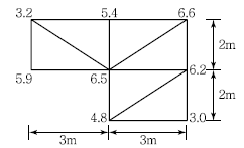
- 85m3
- 90m3
- 95m3
- 100m3
(정답률: 63%)
33. 경사가 일정한 두 지점을 앨리데이드와 줄자를 이용하여 관측할 경우, 경사각이 14.2 눈금, 경사거리가 50.5m이었다면 수평거리는? (단, 관측값의 오차는 없다고 가정한다.)
- 50m
- 48m
- 46m
- 44m
(정답률: 20%)
34. 삼각측량을 위한 삼각점의 위치선정에 있어서 피해야 할 장소와 가장 거리가 먼 것은?
- 나무의 벌목면적이 큰 곳
- 습지 또는 하상인 곳
- 측표를 높게 설치해야 되는 곳
- 편심관측을 해야 되는 곳
(정답률: 63%)
35. 노선측량에서 교각이 32°15ʹ00ʺ, 곡선 반지름 이 600m일 때의 곡선장(C.L.)은?
- 337.72m
- 355.52m
- 315.35m
- 328.75m
(정답률: 60%)
36. 그림과 같은 토지의 1변 BC에 평행하게 m：n＝1：2의 비율로 면적을 분할하고자 한다.
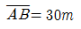
일 때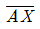
는?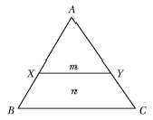
- 8.660m
- 17.321m
- 25.981m
- 34.641m
(정답률: 56%)
37. 항공사진에 나타난 건물 정상의 시차를 관측하니 16mm이고, 건물 밑부분의 시차를 관측하니15.82mm이었다. 이 건물 밑부분을 기준으로 한촬영고도가 5,000m일 때 건물의 높이는?(단, 주점기선장은 16mm이다)
- 36.8m
- 41.2m
- 51.4m
- 56.3m
(정답률: 33%)
38. 확폭량이 S인 노선에서 노선의 곡선 반지름(R)을 두 배로 하면 확폭량(Sʹ)은 얼마가 되는가?
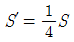
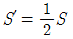
- Sʹ= 2S
- Sʹ= 4S
(정답률: 63%)
39. 4km의 노선에서 결합트래버스 측량을 했을 때 폐합비가 1/6,250이었다면 실제 지형상의 폐합오차는?
- 0.76m
- 0.64m
- 0.52m
- 0.48m
(정답률: 61%)
40. 수준망의 관측결과가 표와 같을 때, 정확도가 가장 높은 것은?
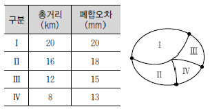
- Ⅰ
- Ⅱ
- Ⅲ
- Ⅳ
(정답률: 57%)
3과목: 수리학 및 수문학
41. 직각 삼각형 위어에서 월류수심의 측정에 2%의 오차가 생겼다면 유량에는 몇 %의 오차가 생기겠는가?
- 2%
- 2.5%
- 4%
- 5%
(정답률: 69%)
42. 다음 중 도수(Hydraulic Jump)의 길이산정에 관한 공식이 아닌 것은?
- Safranez 공식
- Smetana 공식
- Bakhmeteff－Matzke 공식
- Chezy 공식
(정답률: 67%)
43. 도수(Hydraulic Jump) 전후의 수심 h1, h2의 관계를 도수 전의 후루드수 Fr1의 함수로 표시한 것으로 옳은 것은?
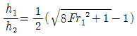
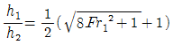
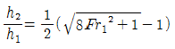
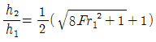
(정답률: 70%)
44. 다음 설명 중 옳지 않은 것은?
- 유량빈도곡선의 경사가 급하면 홍수가 빈번함을 의미한다.
- 수위－유량 관계 곡선의 연장방법에는 전대수지방법, Stevens의 방법 등이 있다.
- 자연하천에서 대부분의 동일 수위에 대한 수위상승시와 하강시의 유량은 같게 유지된다.
- 합리식은 어떤 배수영역에 발생한 강우강도와 첨두유량 간의 관계를 나타낸다.
(정답률: 52%)
45. 단위도(단위 유량도)에 대한 설명으로 옳지 않은 것은?
- 단위도의 3가정은 일정기저시간 가정, 비례 가정, 중첩 가정이다.
- 단위도는 기저유량과 직접유출량을 포함하는 수문곡선이다.
- S－Curve를 이용하여 단위도의 단위시간을 변경할 수 있다.
- Snyder는 합성단위도법을 연구 발표하였다.
(정답률: 45%)
46. 다음 중 이상유체(Ideal Fluid)의 정의를 옳게 설명한 것은?
- 뉴턴(Newton)의 점성법칙을 만족하는 유체
- 비점성, 비압축성인 유체
- 점성이 없는 모든 유체
- 오염되지 않은 순수한 유체
(정답률: 69%)
47. 관수로 흐름에 대한 설명으로 옳지 않은 것은?
- 자유표면이 존재하지 않는다.
- 관수로 내의 흐름이 층류인 경우 포물선 유속분포를 이룬다.
- 관수로 내의 흐름에서는 점성저층(층류저층)이 존재하지 않는다.
- 관수로의 전단응력은 반지름에 비례한다.
(정답률: 48%)
48. 에너지 보정계수에 대한 설명으로 옳은 것은? (단, A：흐름 단면적, v：미소 유관의 유속, V：평균 유속, dA：미소유관의 흐름단면적)
- 연속방정식에 적용된다.
- 속도수두의 단위를 갖고 있다.
- 로 표시된다.
- 로 표시된다.
(정답률: 50%)
49. 그림에서 손실수두가 일 때 지름 0.1m의 관을 통과하는 유량은? (단, 수면은 일정하게 유지된다.)
- 0.085m3/sec
- 0.0426m3/sec
- 0.0399m3/sec
- 0.0798m3/sec
(정답률: 55%)
50. 각 변의 길이가 2cm×3cm인 직사각형 단면의 매끈한 관에 평균유속 1.0m/s로 물이 흐른다. 관의 길이 100m 구간에서 발생하는 손실수두는? (단, 관의 마찰손실계수 f＝0.03이다.)
- 3.2m
- 6.4m
- 13.8m
- 25.5m
(정답률: 38%)
51. 반지름()이 6m이고, θ ʹ＝30°인 수문이 그림과 같이 설치되었을 때 수문에 작용하는 전수압(저항력)은?
- 159.5kN/m
- 169.5kN/m
- 179.5kN/m
- 189.5kN/m
(정답률: 42%)
52. 수문곡선에 대한 설명으로 옳지 않은 것은?
- 하천유로상의 임의의 한 점에서 수문량의 시간에 대한 관계곡선이다.
- 초기에는 지하수에 의한 기저유출만이 하천에 존재한다.
- 시간이 경과함에 따라 지수분포형의 감수곡선이 된다.
- 표면유출은 점차적으로 수문곡선을 하강시키게 된다.
(정답률: 40%)
53. 다음 중 DAD 해석시 직접적으로 불필요한 요소는?
- 자기우량 기록지
- 유역면적
- 최대 강우량 기록
- 상대 습도
(정답률: 64%)
54. 오리피스의 표준단관에서 유속계수가 0.78이었다면 유량계수는?
- 0.66
- 0.70
- 0.74
- 0.78
(정답률: 55%)
55. 2개의 불투수층 사이에 있는 대수층의 두께a, 투수계수 k인 곳에 반지름 ro인 굴착정(Artesian Well)을 설치하고 일정 양수량 Q를 양수하였더니, 양수 전 굴착정 내의 수위 H가 ho로 강하하여 정상흐름이 되었다. 굴착정의 영향원 반지름을 R이라 할 때 (H-ho)의 값은?
(정답률: 70%)
56. 다음 중 물의 순환에 관한 설명으로서 틀린 것은?
- 지구상에 존재하는 수자원이 대기권을 통해 지표면에 공급되고, 지하로 침투하여 지하수를 형성하는 등 복잡한 반복과정이다.
- 지표면 또는 바다로부터 증발된 물이 강수, 침투 및 침루, 유출 등의 과정을 거치는 물의 이동 현상이다.
- 물의 순환과정은 성분과정 간의 물의 이동이 일정률로 연속된다는 것을 의미한다.
- 물의 순환과정 중 강수, 증발 및 증산은 수문기상학 분야이다.
(정답률: 53%)
57. 지름이 2m이고 영향권의 반지름이 1,000m이며, 원지하수의 수위 H＝7m, 집수정의 수위 ho＝5m인 심정호의 양수량은? (단, k＝0.0038m/sec)
- 0.0415m3sec
- 0.0461m3/sec
- 0.0831m3/sec
- 1.8232m3/sec
(정답률: 35%)
58. 개수로의 흐름을 상류－층류와 상류－난류, 사류－층류와 사류－난류의 네 가지 흐름으로 나누는 기준이 되는 한계 Froude 수(Fr)와 한계 Reynolds (Re) 수는?
- Fr=1, Re=1
- Fr=1, Re=500
- Fr=500, Re=1
- Fr=500, Re=500
(정답률: 68%)
59. 폭 10m의 직사각형 단면수로에 15m3/sec의 유량이 80cm의 수심으로 흐를 때 한계수심은? (단, 에너지 보정계수 α＝1.1이다.)
- 0.263m
- 0.352m
- 0.523m
- 0.632m
(정답률: 41%)
60. 경계층에 대한 설명으로 틀린 것은?
- 전단저항은 경계층 내에서 발생한다.
- 경계층 내에서는 층류가 존재할 수 없다.
- 이상유체일 경우는 경계층은 존재하지 않는다.
- 경계층에서는 레이놀즈(Reynolds) 응력이 존재한다.
(정답률: 46%)
4과목: 철근콘크리트 및 강구조
61. 아래 그림의 지그재그로 구멍이 있는 판에서 순폭을 구하면? (단, 구멍직경＝25mm)
- bn=187mm
- bn=141mm
- bn=137mm
- bn=125mm
(정답률: 72%)
62. 복전단 고장력 볼트의 이음에서 강판에 P＝400kN이 작용할 때 필요한 볼트의 수는? (단, 볼트의 지름은 20mm, 허용전단응력은 100MPa)
- 5개
- 6개
- 7개
- 8개
(정답률: 49%)
63. 보의 유효깊이(d) 600mm, 복부의 폭(bw) 320mm, 플랜지의 두께 130mm, 인장철근량 7,650mm2, 양쪽 슬래브의 중심간 거리 2.5m, 경간 10.4m fck＝25MPa, fy＝400MPa로 설계된 대칭 T형보가 있다. 이 보의 등가 직사각형 응력 블록의 깊이(a)는?
- 51.2mm
- 60mm
- 137.5mm
- 145mm
(정답률: 52%)
64. 그림과 같은 단순 PSC 보에서 계수등분포하중 w＝30kN/m가 작용하고 있다. 프리스트레스에 의한 상향력과 이 등분포하중이 비기기 위해서는 프리스트레스 힘 P를 얼마로 도입해야 하는가?
- 900kN
- 1,200kN
- 1,500kN
- 1,800kN
(정답률: 57%)
65. 인장 이형 철근의 정착에 대한 설명으로 옳은 것은?
- 인장 이형 철근의 정착 길이는 기본 정착길이 ldb 에 보정계수를 곱하여 구하며, 상부철근(정착길이 아래 300mm를 초과되게 굳지 않은 콘크리트를 친 수평철근)일 때 보정계수( α)는 1.2이다.
- 에폭시 도막 철근으로 피복 두께가 3db 미만 또는 순간격이 6db 미만인 경우 보정계수( β)는 1.5이다.
- 동일한 철근량을 사용할 경우, 굵은 철근을 사용하는 것이 정착길이를 짧게 하며, 정착에 유리하다.
- 콘크리트의 평균 쪼갬 인장강도(fdb)가 주어지지 않은 경량 콘크리트의 보정계수(λ)는 1.2이다.
(정답률: 45%)
66. 비틀림 철근에 대한 설명 중 옳지 않은 것은? (단, Ph：가장 바깥의 횡방향 폐쇄스터럽 중심선의 둘레 mm)(관련 규정 개정전 문제로 여기서는 기존 정답인 4번을 누르면 정답 처리됩니다. 자세한 내용은 해설을 참고하세요.)
- 비틀림철근의 설계기준항복강도는 400MPa을 초과해서는 안된다.
- 횡방향 비틀림 철근의 간격은 ph/8보다 작아야 하고, 또한 300mm보다 작아야 한다.
- 비틀림에 요구되는 종방향 철근은 폐쇄스터럽의 둘레를 따라 300mm 이하의 간격으로 분포시켜야 한다.
- 스터럽의 각 모서리에 최소한 세 개 이상의 종방향철근을 두어야 한다.
(정답률: 51%)
67. bw＝300mm, d＝550mm, dʹ=50mm, As＝4,500mm2, Asʹ＝2,200mm2인 복철근 직사각형 보가 연성파괴를 한다면 설계 휨모멘트 강도(φMn)은 얼마인가? (단, fck＝21MPa, fy＝300MPa)
- 516.3kN ∙ m
- 565.3kN ∙ m
- 599.3kN ∙ m
- 612.9kN ∙ m
(정답률: 57%)
68. 다음 중 표피철근(Skin Reinforcement)에 대한 설명 중 맞는 것은?
- 전체 깊이가 900mm를 초과하는 휨부재 복부의 양 측면에 부재 축방향으로 배치하는 철근
- 기둥연결부에서 단면치수가 변하는 경우에 배치되는 구부린 주철근
- 건조수축 또는 온도변화에 의하여 콘크리트에 발생되는 균열을 방지하기 위한 목적으로 배치되는 철근
- 비틀림 응력이 크게 일어나는 부재에서 이에 저항하도록 배치되는 철근
(정답률: 50%)
69. 그림과 같은 나선철근 기둥에서 나선철근의 간격(Pitch)으로 적당한 것은? (단, 소요나선철근 비 ps＝0.018, 나선철근의 지름은 12mm이다.)
- 61mm
- 85mm
- 93mm
- 1⑤mm
(정답률: 55%)
70. As＝3,600mm2, Asʹ＝1,200mm2로 배근된 그림과 같은 복철근 보의 탄성처짐이 12mm라할 때 5년 후 지속하중에 의해 유발되는 장기처짐은 얼마인가?
- 36mm
- 18mm
- 12mm
- 6mm
(정답률: 56%)
71. fck＝35MPa, fy＝350MPa을 사용하고 bn＝500mm, d＝1,000mm인 휨을 받는 직사각형단면에 요구되는 최소 휨철근량은 얼마인가?
- 1,524mm2
- 1,745mm2
- 2,000mm2
- 2,113mm2
(정답률: 63%)
72. 폭(bn) 300mm, 유효 깊이(d) 400mm, 높이(h) 550mm, 철근량 (As) 4,800mm2인 보의 균열 모멘트 Mcr의 값은? (단, fck=21MPa이다.)
- 24.5kN∙m
- 28.9kN∙m
- 35.6kN∙m
- 43.7kN∙m
(정답률: 47%)
73. 그림과 같은 2방향 확대 기초에서 하중계수가 고려된 계수하중 Pu(자중 포함)가 그림과 같이 작용할 때 위험단면의 계수전단력(Vu)는 얼마 인가?
- 1111.4kN
- 1163.4kN
- 1209.6kN
- 1372.9kN
(정답률: 45%)
74. bn=450mm, d＝700mm인 정사각형 단면의 공칭 휨모멘트강도(Mn)은 얼마인가? (단, fck＝21MPa, fy＝350MPa, As＝5,000mm2이고, 과소철근보이다.)
- 904.3kN∙m
- 1,034.3kN∙m
- 1,134.3kN∙m
- 1,234.3kN∙m
(정답률: 52%)
75. 보의 길이 l＝20m 활동량 Δl＝4mm, Ep＝200,000MPa일 때 프리스트레스 감소량 Δfp는? (일단, 정착임)
- 40MPa
- 30MPa
- 20MPa
- 15MPa
(정답률: 60%)
76. U형 스터럽의 정착 방법 중 종방향 철근을 둘러싸는 표준갈고리만으로 정착이 가능한 철근의 범위는?
- D16 이하의 철근
- D19 이하의 철근
- D22 이하의 철근
- D25 이하의 철근
(정답률: 45%)
77. 옹벽의 구조해석에 대한 설명으로 틀린 것은?
- 뒷부벽은 직사각형보로 설계하여야 하며, 앞부벽은 T형보로 설계하여야 한다.
- 저판의 뒷굽판은 정확한 방법이 사용되지 않는 한, 뒷굽판 상부에 재하되는 모든 하중을 지지 하도록 설계하여야 한다.
- 캔틸레버식 옹벽의 저판은 전면벽과의 접합부를 고정단으로 간주한 캔틸레버로 가정하여단면을 설계할 수 있다.
- 부벽식 옹벽의 저판은 정밀한 해석이 사용되지 않는 한, 부벽 간의 거리를 경간으로 가정한 고정보 또는 연속보로 설계할 수 있다.
(정답률: 71%)
78. fck＝28MPa, fy＝350MPa로 만들어지는 보에 서 압축이형철근으로 D29(공칭지름 28.6mm)를 사용한다면 기본정착길이는?
- 412mm
- 446mm
- 473mm
- 522mm
(정답률: 62%)
79. 1방향 슬래브의 전단력에 대한 위험 단면은 다음 중 어느 곳인가?
- 슬래브의 중간
- 지점
- 지점에서 d/2만큼 떨어진 곳
- 지점에서 d만큼 떨어진 곳
(정답률: 48%)
80. 주철근 SD400을 사용한 축력과 휨을 동시에 받는 철근콘크리트 부재가 띠철근으로 보강된 경우의 강도감수계수 φ를 구하는 직선보간식으로 옳은 것은?
- 0.546＋57.1 εt
- 0.542＋61.5 εt
- 0.517＋66.7 εt
- 0.517＋53.3 εt
(정답률: 50%)
5과목: 토질 및 기초
81. 유효응력에 대한 설명으로 옳은 것은?
- 지하수면에서 모관상승고까지의 영역에서는 유효응력은 감소한다.
- 유효응력만의 흙덩이의 변형과 전단에 관계된다.
- 유효응력은 대부분 물이 받는 응력을 말한다.
- 유효응력은 전응력에 간극수압을 더한 값이다.
(정답률: 32%)
82. 어떤 굳은 점토층을 깊이 7m까지 연직 절토하였다. 이 점토층의 일축압축강도가 1.4kg/cm2, 흙의 단위중량이 2t/m3라 하면 파괴에 대한 안전율은? (단, 내부마찰각은 30°)
- 0.5
- 1.0
- 1.5
- 2.0
(정답률: 47%)
83. 흙의 분류법인 AASHTO분류법과 통일분류법을 비교 ㆍ분석한 내용으로 틀린 것은?
- 통일분류법은 0.075mm체 통과율을 35%를 기준 으로 조립토와 세립토로 분류하는데 이것은 AASHTO분류법보다 적절하다.
- 통일분류법은 입도분포, 액성한계, 소성지수 등을 주요 분류인자로 한 분류법이다.
- AASHTO분류법은 입도분포, 군지수 등을 주요 분류인자로 한 분류법이다.
- 통일분류법은 유기질토 분류방법이 있으나 AASHTO분류법은 없다.
(정답률: 54%)
84. Sand Drain의 지배영역에 관한 Barron의 정삼각형 배치에서 샌드 드레인의 간격을 d, 유효원 의 직경을 de라 할 때 de를 구하는 식으로 옳은 것은?
- de＝1.128d
- de＝1.028d
- de＝1.⑤0d
- de＝1.50d
(정답률: 63%)
85. 2.0kg/cm2의 구속응력을 가하여 시료를 완전히 압밀시킨 다음, 축차응력을 가하여 비배수 상태로 전단시켜 파괴시 축변형률 εf＝10%, 축차응력 Δσf＝2.8kg/cm2, 간극수압 Δuf＝2.1kg/cm2 를 얻었다. 파괴시 간극수압계수 A를 구하면? (단, 간극수압계수 B는 1.0으로 가정한다.)
- 0.44
- 0.75
- 1.33
- 2.27
(정답률: 42%)
86. 접지압(또는 지반반력)이 그림과 같이 되는 경우는?
- 후팅：강성, 기초지반：점토
- 후팅：강성, 기초지반：모래
- 후팅：연성, 기초지반：점토
- 후팅：연성, 기초지반：모래
(정답률: 63%)
87. 연약한 점성토의 지반특성을 파악하기 위한 현장조사 시험방법에 대한 설명 중 틀린 것은?
- 현장베인시험은 연약한 점토층에서 비배수 전단강도를 직접 산정할 수 있다.
- 정적콘관입시험(CPT)은 콘지수를 이용하여 비배수 전단 강도 추정이 가능하다.
- 표준관입시험에서의 N값은 연약한 점성토 지반특성을 잘 반영해 준다.
- 정적콘관입시험(CPT)은 연속적인 지층분류 및 전단강도 추정 등 연약점토 특성분석에 매우 효과적이다.
(정답률: 48%)
88. 흙의 다짐에 관한 설명 중 옳지 않은 것은?
- 일반적으로 흙의 건조밀도는 가하는 다짐 Energy가 클수록 크다.
- 모래질 흙은 진동 또는 진동을 동반하는 다짐방법이 유효하다.
- 건조밀도－함수비 곡선에서 최적 함수비와 최대 건조밀도를 구할 수 있다.
- 모래질을 많이 포함한 흙의 건조밀도－함수비곡선의 경사는 완만하다.
(정답률: 54%)
89. 아래와 같은 흙의 입도분포곡선에 대한 설명으로 옳은 것은?
- A는 B보다 유효경이 작다.
- A는 B보다 균등계수가 작다.
- C는 B보다 균등계수가 크다.
- B는 C보다 유효경이 크다.
(정답률: 61%)
90. 얕은기초의 지지력 계산에 적용하는 Terzaghi의 극한지지력 공식에 대한 설명으로 틀린 것은?
- 기초의 근입깊이가 증가하면 지지력도 증가한다.
- 기초의 폭이 증가하면 지지력도 증가한다.
- 기초지반이 지하수에 의해 포화되면 지지력은 감소한다.
- 국부전단 파괴가 일어나는 지반에서 내부마찰각( φ)은 2/3φ를 적용한다.
(정답률: 54%)
91. 지름 d＝20cm인 나무말뚝을 25본 박아서 기초상판을 지지하고 있다. 말뚝의 배치를 5열로 하고 각 열은 두 간격으로 5본씩 박혀 있다. 말뚝의 중심간격 S＝1m이고 본의 말뚝이 단독으로 10t의 지지력을 가졌다고 하면 이 무리말뚝은 전체로 얼마의 하중을 견딜 수 있는가? (단, Converse－Labbarre식을 사용한다.)
- 100t
- 200t
- 300t
- 400t
(정답률: 54%)
92. 현장에서 채취한 흙시료에 대해 압밀시험을 실시 하였다. 압밀링에 담겨진 시료의 단면적은 30cm2, 시료의 초기높이는 2.6cm, 시료의 비중은 2.5이며 시료의 건조중량은 120g이었다. 이 시료에 3.2kg/cm2의 압밀압력을 가했을 때, 0.2cm의 최종 압밀침하가 발생되었다면 압밀 이 완료된 후 시료의 간극비는?
- 0.125
- 0.385
- 0.500
- 0.625
(정답률: 23%)
93. 흙 속에서 물의 흐름을 설명한 것으로 틀린 것은?
- 투수계수는 온도에 비례하고 점성에 반비례한다.
- 불포화토는 포화토에 비해 유효응력이 작고, 투수계수가 크다.
- 흙 속의 침투수량은 Darcy 법칙, 유선망, 침투해석 프로그램 등에 의해 구할 수 있다.
- 흙 속에서 물이 흐를 때 수두차가 커져 한계동 수구배에 이르면 분사현상이 발생한다.
(정답률: 54%)
94. 표준관입 시험에서 N치가 20으로 측정되는 모래 지반에 대한 설명으로 옳은 것은?
- 매우 느슨한 상태이다.
- 간극비가 1.2인 모래이다.
- 내부마찰각이 30°～40°인 모래이다.
- 유효상재 하중이 20t/m2t인 모래이다.
(정답률: 61%)
95. 현장 도로 토공에서 들밀도 시험을 실시한 결과 파낸 구멍의 체적이 1,980cm3이었고, 이 구멍 에서 파낸 흙무게가 3,420g이었다. 이 흙의 토질실험 결과 함수비가 10%, 비중이 2.7, 최대건조 단위무게가 1.65g/cm3이었을 때 현장의 다짐도는?
- 80%
- 85%
- 91%
- 95%
(정답률: 53%)
96. 점성토의 비배수 전단강도를 구하는 시험으로 가장 적합하지 않은 것은?
- 일축압축시험
- 비압밀비배수 삼축압축시험(UU)
- 베인시험
- 직접전단강도시험
(정답률: 58%)
97. 그림과 같은 옹벽배면에 작용하는 토압의 크기를 Rankine의 토압공식으로 구하면?
- 3.2t/m
- 3.7t/m
- 4.7t/m
- 5.2t/m
(정답률: 58%)
98. 비중 Gs=2.35, 간극비 e=0.35인 모래지반의 한계동수경사는?
- 1.0
- 1.5
- 2.0
- 2.5
(정답률: 61%)
99. 사면의 안정문제는 보통 사면의 단위 길이를 취하여 2차원 해석을 한다. 이렇게 하는 가장 중요한 이유는?
- 길이 방향의 변형도(Strain)를 무시할 수 있다고 보기 때문이다.
- 흙의 특성이 등방성(Isotropic)이라고 보기 때문이다.
- 길이 방향의 응력도(Stress)를 무시할 수 있다고 보기 때문이다.
- 실제 파괴형태가 이와 같기 때문이다.
(정답률: 35%)
100. 흙의 동상에 영향을 미치는 요소가 아닌 것은?
- 모관 상승고
- 흙의 투수계수
- 흙의 전단강도
- 등결온도의 계속시간
(정답률: 48%)
6과목: 상하수도공학
101. 활성탄 공정에서 COD가 56mg/L인 원수에 활성탄 20mg/L을 주입하였더니 COD가 16mg/L로 되었고, 활성탄 52mg/L을 주입하였더니 COD가 4mg/L로 되었다. COD 2mg/L로 하기 위해 소비되는 활성탄의 양은?(단, Freundlich 등온식()을 이용)
- 40.82mg/L
- 52.19mg/L
- 76.37mg/L
- 85.19mg/L
(정답률: 22%)
102. 하수도 기본계획에서 계획목표년도의 인구추정 방법이 아닌 것은?
- Stevens 모형에 의한 방법
- Logistic 곡선식에 의한 방법
- 지수함수곡선식에 의한 방법
- 생잔모형에 의한 조성법(Cohort Method)
(정답률: 44%)
103. 펌프를 선택할 때에 반드시 고려해야 할 사항은?
- 양정
- 지질
- 무게
- 방향
(정답률: 59%)
104. 양수량이 8m3/min, 전양정이 4m, 회전수 1,160rpm인 펌프의 비회전도는?
- 316
- 985
- 1,160
- 1,436
(정답률: 64%)
1⑤. Rippleʹps Method에 의하여 저수지 용량을 결정 하려고 할 때 그림에서 최대 갈수량을 대비한 저수개시 시점은? (단, 직선은 직선에 평행)
- ①시점
- ②시점
- ③시점
- ④시점
(정답률: 68%)
106. 하수도시설기준에 의한 우수관거 및 합류관거의 표준 최소관경은?
- 200mm
- 250mm
- 300mm
- 350mm
(정답률: 61%)
107. 하수관거 내에 황하수소(H2S)가 통상 존재하는 이유에 대한 설명으로 옳은 것은?
- 용존산소로 인해 유황이 산화하기 때문이다.
- 용존산소 결핍으로 박테리아가 메탄가스를 환원시키기 때문이다.
- 용존산소 결핍으로 박테리아가 황산염을 환원시키기 때문이다.
- 용존산소로 인해 박테리아가 메탄가스를 환원시키기 때문이다.
(정답률: 64%)
108. 계획오수량을 생활오수량, 공장폐수량 및 지하수량으로 구분할 때, 이것에 대한 설명으로 옳지 않은 것은?
- 지하수량은 1인1일 최대오수량의 10～20%로 한다.
- 계획 1일 최대오수량은 1인 1일 최대오수량에 계획인구를 곱한 후, 여기에 공장폐수량, 지하 수량 및 기타 배수량을 더한 것으로 한다.
- 계획 1일 평균오수량은 계획 1일 최대오수량의 70～80%를 표준으로 한다.
- 합류식에서 우천시 계획오수량은 원칙적으로 계획 시간 최대오수량의 2배 이상으로 한다.
(정답률: 64%)
109. 정수시설 중 배출수 및 슬러지처리시설의 설명이다. ㉠, ㉡에 알맞은 것은?
- ㉠12～24, ㉡5～10
- ㉠12～24, ㉡10～20
- ㉠24～48, ㉡5～10
- ㉠24～48, ㉡10～20
(정답률: 36%)
110. 하수의 배제방식의 분류식과 합류식에 대한 설명으로 옳지 않은 것은?
- 분류식은 오수만을 처리장으로 수송하는 방식으로 우천시에 오수를 수역으로 방류하는 일이 없으므로 수질오염 방지상 유리하다.
- 분류식의 오수관거는 소구경이기 때문에 합류식에 비해 경사가 완만하고 매설깊이가 적어지는 장점이 있다.
- 합류식은 단일관거로 오수와 우수를 배제하기 때문에 침수피해의 다발지역이나 우수배제 시설이 정비되어 있지 않은 지역에서 유리하다.
- 합류식은 분류식에 비해 시공이 용이하나 우천시에 관거 내의 침전물이 일시에 유출되어 처리장에 큰 부담을 줄 수 있다.
(정답률: 36%)
111. 폭 10m, 길이 25m인 장방형 침전조에 넓이 80m2인 경사판 1개를 침전조 바닥에 대하여 10°의 경사로 설치하였다면 이론적으로 침전 효율은 몇 % 증가하겠는가?
- 약 5%
- 약 10%
- 약 20%
- 약 30%
(정답률: 21%)
112. 배수관의 수압에 관한 사항으로 ㉠, ㉡에 들어 갈 적정한 값은?
- ㉠150, ㉡700
- ㉠150, ㉡600
- ㉠200, ㉡700
- ㉠200, ㉡600
(정답률: 50%)
113. 하수관거의 직선부에서 맨홀(Man Hole)의 관경에 대한 최대 간격의 표준으로 옳은 것은?
- 관경 600mm 이하의 경우 최대간격 50m
- 관경 600mm 초과 1,000 이하의 경우 최대간격 100m
- 관경 1,000mm 초과 1,500 이하의 경우 최대간격 125m
- 관경 1,650mm 이상의 경우 최대간격 150m
(정답률: 59%)
114. 우수가 하수관거로 유입하는 시간이 4분, 하수관 거에서의 유하시간이 10분, 이 유역의 유역면적이 4km2, 유출계수는 0.6, 강우강도식 일 때 첨두유량은? (단, t의 단위：[분])
- 8.02m3/sec
- 80.2m3/sec
- 10.4m3/sec
- 104m34/sec
(정답률: 62%)
115. 하천 및 저수지의 수질해석을 위한 수학적 모형을 구성하고자 할 때 가장 기본이 되는 수학적방정식은?
- 에너지보존의 식
- 질량보존의 식
- 운동량보존의 식
- 난류의 운동방정식
(정답률: 60%)
116. 정수장으로 유입되는 원수의 수역이 부영양화되어 녹색을 띄고 있다. 정수방법에서 고려할 수 있는 최우선적인 방법에 해당하는 것은?
- 침전지의 깊이를 깊게 한다.
- 여과사의 입경을 작게 한다.
- 침전지의 표면적을 크게 한다.
- 마이크로 스트레이너로 전처리한다.
(정답률: 66%)
117. BOD가 500mg/L인 공장폐수를 전처리, 1차 처리, 2차 처리하고 있다. 전처리에서 10%, 1차 처리에서 20%, 2차 처리에서 85%의 제거효율을 갖는다면 이 폐수의 최종유출수의 BOD는?
- 26mg/L
- 38mg/L
- 48mg/L
- 54mg/L
(정답률: 49%)
118. 부유물 농도 200mg/L, 유량 2,000m3/day인 하수가 침전지에서 70% 제거된다. 이 때 슬러지의 함수율이 95%, 비중 1.1일 때 슬러지의 양은?
- 4.9m3/day
- 5.1m3/day
- 5.3m3/day
- 5.5m3/day
(정답률: 43%)
119. 다음 중 보통 수돗물에서 염소소독 시, 살균력 이 가장 강할 경우는?
- 수온이 높고 pH값이 높을 때
- 수온이 낮고 pH값이 높을 때
- 수온이 낮고 pH값이 낮을 때
- 수온이 높고 pH값이 낮을 때
(정답률: 43%)
120. 관망에서 등치관에 대한 설명으로 옳은 것은?
- 관의 직경이 같은 관을 말한다.
- 유속이 서로 같으면서 관의 직경이 다른 관을 말한다.
- 수두손실이 같으면서 관의 직경이 다른 관을 말한다.
- 수원과 수질이 같은 주관과 지관을 말한다.
(정답률: 58%)
목재의 길이는 0.25m이므로, 목재의 단위길이당 무게는 200kg / 1.25m = 160kg/m이 된다. 이를 체인의 길이에 대한 비율로 계산하면, 체인의 단위길이당 무게는 160kg/m / 1.25m = 128kg/m이 된다.
따라서 체인의 총 무게는 1.25m * 128kg/m = 160kg이 된다. 이는 목재의 무게와 체인의 무게를 합한 값과 같으므로, 체인에 작용하는 인장력은 200kg + 160kg = 360kg이 된다.
하지만 문제에서는 답이 "kg"가 아니라 "N"으로 주어져 있으므로, 이를 뉴턴으로 변환해야 한다. 1kg은 9.8N이므로, 360kg은 360 * 9.8 = 3528N이 된다. 이를 반올림하여 정답은 "113.4kg"가 된다.